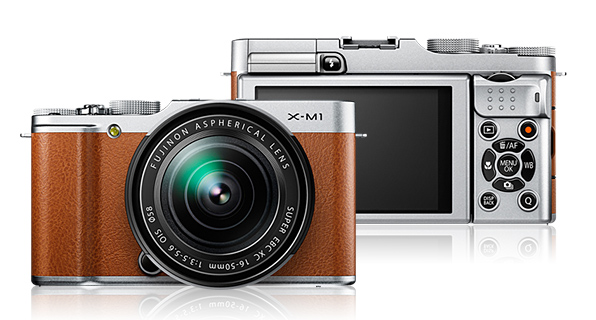

FotoMag
Vitajte na Fotomag.sk, stránkach pre profesionálnych ale aj hobby fotografov. Na tejto stránke najdete obchod s tými najnovšími vychytávkami zo sveta fotoaparátov, ale takisto aj príspevky od profesionálov o tom ako fotiť, či ako upravovať Vaše zábery. Ak Vás baví fotenie a mýslite, že ste v tom dobrí môžete sa zapojiť do aktuálnej súťaže. V prípade, že sa Váš fotoaparát alebo nejaké jeho príslušnstvo pokazilo, neváhajte a napíšte našim šikovným technikom a oni Vám už určite poradia.
Novinky v obchode
U nás v obchode si môžete kúpiť rôzne fotoaparáty a ich príslušenstvo. Každý deň sa znažíme pre Vás prichystať zaujímavé ponuky, či dodať tie najnovšie zariadenia. Toto sú tie najnovšie produkty v našom obchode
Lytro Illum
- Obrázok
-

- Popis
- Lytro Illum je druhou generáciou jedinečného konceptu digitálneho fotoaparátu, ktorý je založený na úplne novom prístupe k digitálnej fotografii umožňujúcej zachytávať... Viac detailov
- Cena
- 1599,00 €
Fujifilm FinePix X-M1
- Obrázok
- 
- Popis
- Fujifilm FinePix X-M1 je systémový fotoaparát vybavený 16,3 MPix X-Trans CMOS snímačom veľkosti APS-C, bajonetom X pre objektívy Fujinon, vstavaným Wi-Fi, rýchlym zaostrovaním... Viac detailov
- Cena
- 799,00 €
Najnovšie príspevky
Desatoro základných úprav fotografií
Na internete najdete milióny článkov a tutoriálov, ktoré ukazujú ako upraviť to či ono. Konkrétnych návodov je k dispozícii hromada a ich prechládzaním by ste mohli stráviť celú večnosť. V tomto článku sa nenaučíte žiadnu novú úpravu, která zariadi úžasný super vzhľad vašich fotiek. Miesto toho si ale ukážeme, ako ideálne postupovať pri editácii fotiek. Neexistuje jeden presne daný ideálny postup, avšak vetšina fotografov určitý logický proces dodržuje... Aký, to sa dočítate dalej.
Lightroom, 1. časť: úpravy a organizácia
Prvý diel seriálu o Adobe Lightroom je výlučne úvodným - voľným pojatím o organizácii fotografií všeobecne. Môže se teda vzťahovať v podstate na ľubovoľný program na práci s digitálnymi snímkami. Úpravy a organizovanie našich digitálnych snímkov je kľúčovým (aj keď často podceňovaným) faktorem celého „foto-reťazca“ - počínajúc stisknutím spúšte až po fotografiu v tlačovej podobe. Pritom sa jedná o úplne zásadný faktor, bez ktorého je správa digitálnych fotografií omnoho problematickejšia. Ako na to?
Súťaže
Aktuálna súťaž - Jar v horách
Ste nadšení turisti? V trekových topánkach sa cítite ako ryba vo vode? Potom je táto súťažná úloha pre Vás ako stvorená. Ak sa s nami podelíte o Vaše zážitky z hôr, v podobe pekných fotografii, odmena Vás určite neminie.
Výsledky súťaže - Veľkonočná oblievačka
Súťažná téma na tento mesiac je Veľka noc, konkrétne veľmi obľubená tradícia oblievania dievčat. Či už zachytíte práve kupačov v akcii alebo vašu výslužku, veľmi sa tešíme na vaše fotografie. Tak šup foťák do vodotesného púzdra, vedro do ruky a hor sa vyšibať dievčatá. Prajeme Vám veselú Veľkú noc.
Kontaktujte servis
Ak máte nejaké technické problémy s Vašim zariadením alebo jeho príslušenstvom, nevahajte kontaktovať náš servis. Po vyplnení krátkeho formulára Vás najneskôr nasledujúci pracovný deň bude kontaktovať zamestnanec nášho servisu.